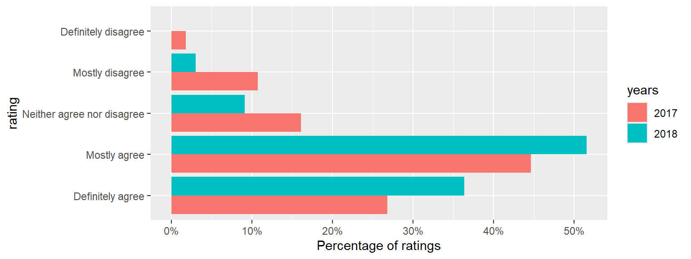

Chapter 10 \(\chi^2\) tests for contingency tables
For our final hypothesis testing problem, we will extend the problem of comparing two binomial distributions to two (or more) multinomial distributions, to see if the probability parameters in each distribution are the same.
10.1 Example: customer ratings of restaurants
The website tripadvisor gives customer reviews of hotels, restaurants, tourist attractions etc., and each review includes a rating. Ratings for restaurants in Sheffield (in September 2018) were as follows:
| Excellent | Very good | Average | Poor | Terrible | |
|---|---|---|---|---|---|
| Akbar’s | 146 | 70 | 33 | 24 | 25 |
| Aagrah | 419 | 277 | 102 | 66 | 52 |
This type of data is sometimes described as contingency table data. For each customer, we record two qualitative variables: the restaurant the customer went to, and the rating the customer gave. The numbers in the table then give the number of times each restaurant-rating pair occurred.
Based on these scores, the restaurants were given a ranking: Akbar’s was ranked 187 out of 1257 restaurants in Sheffield, and Aagrah was ranked 116. However, the percentage of ratings in each category looks similar for the two restaurants, as we can see in Figure 10.1. We might wonder whether the customer ratings are significantly different; if they are not, one could argue that the rankings are not meaningful. (The same concern applies to most league tables, sporting ones excluded.)
Figure 10.1: Comparing percentages of ratings for the two restaurants. These look similar - could the differences just be down to random chance?
10.2 A model and hypotheses
We can model these data using multinomial distributions. Before the ratings have been observed, define, as random variables, \(Y=(Y_1,Y_2,Y_3,Y_4,Y_5)\) as the number of ratings in each category in for Akbar’s, and \(Z=(Z_1,Z_2,Z_3,Z_4,Z_5)\) as the number of ratings in each category for Aagrah So, for example, \(Y_2\) would be the number of “very good” ratings for Akbar’s, and \(Z_5\) would be the number of “terrible” ratings for Aagrah. Keeping the total number of ratings fixed for each restaurant, we might suppose that \[\begin{align} Y &\sim multinom(298; \theta_{1}, \theta_{2},\ldots,\theta_{5}),\\ Z &\sim multinom(916; \phi_{1}, \phi_{2},\ldots,\phi_{5}), \end{align}\] with, for example, \(\theta_{1}\) the probability of an “excellent” rating for Akbar’s, and \(\phi_2\) the probability of a “very good” rating for Aagrah.
We state the null hypothesis as \[\begin{align} H_0 &:\theta_i = \phi_i,\quad i=1,2,\ldots,5 \\ H_A &:\theta_i \neq \phi_i,\quad \mbox{for at least one $i$}, \end{align}\] so our null hypothesis is that the probability of a particular rating is the same for either restaurant.
10.3 A test statistic
Here, we use the test statistic
\[ X^2 = \sum_{i=1}^R\sum_{j=1}^C\frac{(O_{i,j} - E_{i,j})^2}{E_{{i,j}}}, \] where
- \(O_{i,j}\) is the observed count in row \(i\), column \(j\) of the table,
- \(E_{i,j}\) is the expected count in row \(i\), column \(j\) of the table assuming \(H_0\) is true, and is computed as
\[ E_{i,j} = \frac{\mbox{(total in row $i$)} \times \mbox{(total in column $j$)}}{\mbox{grand total}} \tag{10.1} \]
- \(R\) is the number of rows in the table (2 in the example),
- \(C\) is the number of columns in the table (5 in the example).
- The test statistic cannot be negative. The smallest possible value is 0, when all the observations are exactly what we would expect to see, if \(H_0\) were true.
- \(X^2\) will get larger as the observed values \(O_{i,j}\) differ more from the expected values \(E_{i,j}\) under \(H_0\); larger values of \(X^2\) will give stronger evidence against \(H_0\).
10.3.1 The formula for the expected counts
We now explain where the formula for \(E_{i,j}\) comes from. As an example, consider \(E_{1,2}\): the expected number of “very good” ratings for Akbar’s. From the multinomial distribution that we defined previously (\(Y \sim multinom(298; \theta_{1}, \theta_{2},\ldots,\theta_{5})\)), this expected number would be \[ 298 \times \theta_2, \] so we will need an estimate of \(\theta_2\), the probability of a “very good” ratings for Akbar’s. We estimate \(\theta_2\) using the following argument.
- Under \(H_0\), the probability of a “very good” rating is the same in both rows of the table: we have \(\theta_2 = \phi_2\).
- We observed \(70+277 = 347\) “very good” ratings in total, out of a grand total of 1214 ratings
- An appropriate estimate of \(\theta_2\) would therefore be \(\frac{374}{1214}\). (We would use the same estimate of \(\phi_2\), under \(H_0\) which assumes \(\theta_2 = \phi_2\)).
Hence we have \[ E_{1,2} = 298 \times \frac{347}{1214} =\frac{\mbox{(total in row 1)} \times \mbox{(total in column 2)}}{\mbox{grand total}}. \]
10.4 Computing the test statistic for the observed data
We now compute all the expected values:
| \({}\) | Excellent | Very good | Average | Poor | Terrible |
|---|---|---|---|---|---|
| Akbar’s | \(\frac{298\times 565}{1214}\) | \(\frac{298\times 347}{1214}\) | \(\frac{298\times 135}{1214}\) | \(\frac{298\times 90}{1214}\) | \(\frac{298\times 77}{1214}\) |
| Aagrah | \(\frac{916\times 565}{1214}\) | \(\frac{916\times 347}{1214}\) | \(\frac{916\times 135}{1214}\) | \(\frac{916\times 90}{1214}\) | \(\frac{916\times 77}{1214}\) |
We can now compute our observed test statistic: \[\begin{align} X^2_{obs}&= \frac{(146 - 138.7)^2}{138.7} + \frac{(70 - 85.18)^2}{85.18}\\ &+ \frac{(33-33.14)^2}{33.14} +\frac{(24 - 22.09)^2}{22.09}\\ &+ \frac{(25 - 18.9)^2}{18.9} +\frac{(419 - 426.3)^2}{426.3} \\ &+\frac{(277 - 261.82)^2}{261.82} +\frac{(102 - 101.86)^2}{101.86}\\ &+\frac{(66 - 67.91)^2}{67.91} +\frac{(52 - 58.1)^2}{58.1}\\ & = 6.92 \end{align}\]
We’ll also do this calculation in R. We first set up the table of observed value in R using the matrix() command, specifying 2 rows (nrow = 2), 5 columns (ncol = 5), and that the provided values (c(146, 70, ..., 52)) are specified in order along the rows (byrow = TRUE).
To check this has worked:
## [,1] [,2] [,3] [,4] [,5]
## [1,] 146 70 33 24 25
## [2,] 419 277 102 66 52Now we’ll compute a matrix of expected values, using the outer(), rowSums and colSums() commands. Don’t worry about how these work (though you might guess), just note where we’ve used the matrix observed.
Then to compute the test statistic:
## [1] 6.92210.5 A simulation method
As in previous chapters, we will first try a simulation method to see how ‘easy’ it is to obtain a test statistic as large as the one we observed, if \(H_0\) were true.
Assuming \(H_0\) to be true, and using the estimated probabilities used in the calculation of the expected values \(E_{i,j}\), we have
\[\begin{align} Y &\sim multinom(298; \frac{565}{1214}, \frac{347}{1214}, \frac{135}{1214}, \frac{90}{1214}, \frac{77}{1214} ),\\ Z &\sim multinom(916; \frac{565}{1214}, \frac{347}{1214}, \frac{135}{1214}, \frac{90}{1214}, \frac{77}{1214}). \end{align}\]
We now get R to simulate a random \(Y\) and \(Z\), and assemble a new matrix of observed values, which we call newObserved.
Y <- rmultinom(1, 298, c(565, 347, 135, 90, 77)/1214)
Z <- rmultinom(1, 916, c(565, 347, 135, 90, 77)/1214)
newObserved <- matrix(c(Y, Z),
nrow = 2, ncol = 5, byrow = TRUE)and to see what we got:
## [,1] [,2] [,3] [,4] [,5]
## [1,] 167 75 24 17 15
## [2,] 436 252 100 76 52Now we compute the test statistic on this simulated data:
## [1] 7.63This has produced a larger test statistic: even though the probabilities of the different ratings were the same for the two restaurants, in the simulation, there was a bigger difference between the observed ratings for the two restaurants.
Now we repeat the simulation a large number of times.
chisquared <- rep(0, 100000)
for(i in 1:100000){
Y <- rmultinom(1, 298, c(565, 347, 135, 90, 77)/1214)
Z <- rmultinom(1, 916, c(565, 347, 135, 90, 77)/1214)
newObserved <- matrix(c(Y, Z),
nrow = 2, ncol = 5, byrow = TRUE)
newExpected <- outer(rowSums(newObserved),
colSums(newObserved), "*") /
sum(newObserved)
chisquared[i] <- sum((newObserved - newExpected)^2 / newExpected)
}
sum(chisquared >= 6.92)## [1] 14014So about 14% of the time (14014/100000), we get test statistics larger than 6.92: if \(H_0\) were true, there would be nothing ‘surprising’ about the observed differences in ratings between the two restaurants.
The 14% is our \(p\)-value: our probability that the test statistic would be as large as 6.92, if \(H_0\) is true.
We’ll draw a histogram of our test statistics to visualise this.

Figure 10.2: Histogram of randomly simulated test statistics, all simulated assuming \(H_0\) is true. The larger values correspond to larger differences between the observed values, and the expected values under \(H_0\). We are able to generate test statistics larger than the observed one (6.92) about 14% of the time.
10.6 An analytical method
Rather than using simulation, we can instead use an analytical approach, based on an approximate distribution of the test statistic under \(H_0\).
If \(H_0\) is true then, approximately \[X^2 \sim \chi^2_{\nu},\] with \(\nu =\) (number of rows \(-1\)) \(\times\) (number of columns \(-1\)). We then compute the \(p\)-value as \[ P(X^2\ge X^2_{obs}), \] for \(X^2\sim \chi^2_{\nu}\).
As a rule-of-thumb, each expected count should be at least 5, otherwise the approximation may not be very good. If any expected count is less than 5, we could combine columns in the table, so that we have a smaller table, but more observations in (some of) the cells.
Informally, we can think of the degrees of freedom parameter \(\nu\) as the number of ‘pieces of information’ we have to compare the two distributions.
- We have 10 observations in total: 2 rows \(\times\) 5 columns.
- The row totals are fixed: the values in the last column are determined by the values in the first four columns. This reduces us to \(2 \times (5-1)\) ‘unconstrained’ observations.
- We have had to estimate the probability of response in each column. Probabilities must sum to one, so we have estimated (number of columns \(-1\) ) parameters here.
- The degrees of freedom is the number of ‘unconstrained’ observations, minus the the number of estimated parameters: \(\nu=\) (number of rows)\(\times\)(number of columns \(-1\)) \(-\) (number of columns} \(- 1\))\(=\)(number of rows} \(-1\))\(\times\)(number of columns \(-1\)).
In our example, we have
\(\nu =\) (number of rows\(-1\))\(\times\) (number of columns \(- 1) = 4\), so we need to compute
\[
P(X^2\ge 6.92),
\]
for \(X^2\sim \chi^2_{4}\). We obtain this from R with the pchisq() command:
## [1] 0.1402Notice how close this is to the \(p\)-value obtained in our simulation. This is because the \(\chi^2\) approximation is good for this sample size. We illustrate this below.
Figure 10.3: The \(\chi^2_4\) distribution, together with a histogram of our simulated test statistics. Notice the close agreement: the approximation of a \(\chi^2_4\) distribution for the test statistic is a good one. The \(p\)-value (0.14) is shown by the red shaded area.
In conclusion, we state that there is no evidence against \(H_0\): no evidence to say that a customer is more likely to rate one restaurant higher than the other. This would suggest that the difference in rankings between the two restuarants (116 and 187) is not particularly meaningful.
10.6.1 \(\chi^2\) tests in R
We can conduct a \(\chi^2\) test in R using the command chisq.test(). Recall that we set up our data as a matrix in R:
## [,1] [,2] [,3] [,4] [,5]
## [1,] 146 70 33 24 25
## [2,] 419 277 102 66 52We can then use the chisq.test() function:
##
## Pearson's Chi-squared test
##
## data: observed
## X-squared = 6.9, df = 4, p-value = 0.110.6.2 Row homogeneity and independence
The \(\chi^2\) test described above can be used in two different situations: testing for “row homogeneity” and testing for “independence”. The calculations used in each case are identical and so for this module, you don’t need to worry about the difference. In later modules, or in textbooks, you may come across these two terms, so we will explain what they mean. Two examples are given, which are included in the Tutorial Booklet, and so you will be able to see the solutions.
10.6.2.1 Row homogeneity
Here, we suppose that totals in each row are fixed in advance. For each row, the counts along the columns can be modelled with a multinomial distribution. By “row homogeneity”, we mean that the multinomial probabilities are the same for every row. For example, suppose we want to compare voting preferences between voters who did and did not attend university. Suppose two random samples are drawn: 500 from each group. Participants named their favoured political party. Fictitious data are given below.
| Con | Lab | Lib | Other | |
|---|---|---|---|---|
| University: yes | 202 | 82 | 102 | 114 |
| University: no | 178 | 116 | 42 | 116 |
Here, the totals in each row are fixed at 500, and we can test whether the probabilities of voting for particular parties are the same in each row.
10.6.2.2 Independence
In this scenario, we take two ‘measurements’ per individual, and want to tests whether the measurements are related. For example, in a survey of 237 (Statistics) students from the University of Adelaide, smoking habits (recorded here as one of “Never”, “Occasional”, “Regular” or “Heavy”) and exercise levels (recorded here as one of “Regular” or “some/none”) were observed. A contingency table is given below, with smoking status in the rows, and exercise in the columns [^61].
| Smoking status | exercise: regular | exercise: some/none |
|---|---|---|
| Never | 87 | 102 |
| Occasional | 12 | 7 |
| Regular | 9 | 8 |
| Heavy | 7 | 4 |
Here, we may wish to test whether smoking status is independent of exercise level, for example:
\[\begin{align} &P(\mbox{regular exerciser and heavy smoker})\\ &= P(\mbox{regular exerciser})\\ &\times P(\mbox{heavy smoker}) \end{align}\] We can use exactly the same method as before: we calculate the expected values in exactly the same way, and compute the same \(X^2\) test statistic, checking for cells with small expected counts as before. The reason this works is that we can express the null hypothesis of independence another way: \[ P(\mbox{regular exerciser | heavy smoker}) = P(\mbox{regular exerciser}), \] so that the probability of being a regular exerciser would be the same for each row of the table: this is exactly what we would test for when testing for row homogeneity.
10.7 Exercise
Example 10.1 (Analysing student module questionnaire results)
The following data are from student module evaluations for this module, taken from two successive years. Regarding the statement, “I am satisfied with the quality of this module,” the following responses were given. (56 students responded in 2017, and 33 students responded in 2018.)
| Definitely agree | Mostly agree | Neither agree nor disagree | Mostly disagree | Definitely disagree | |
|---|---|---|---|---|---|
| 2017 | 15 (26.8%) | 25 (44.6%) | 9 (16.1%) | 6 (10.7%) | 1 (1.8%) |
| 2018 | 12 (36.4%) | 17 (51.5%) | 3 (9.1%) | 1 (3%) | 0 (0%) |

The counts for the disagree responses are small, so we will combine those categories:
| Year | Definitely agree | Mostly agree | Neither agree nor disagree / mostly disagree / definitely disagree |
|---|---|---|---|
| 2017 | 15 | 25 | 16 |
| 2018 | 12 | 17 | 4 |
There appears to be some improvement in 2018, but is it statistically significant?
- State the model and suitable hypotheses
- Under a hypothesis of no difference between the years, give the expected number of “definitely agree” responses in 2018.
- Given a \(\chi^2\) statistic of 3.34, draw a sketch to indicate what the \(p\)-value would represent, and give a conclusion for the test. Some of the R output below will help you.
## [1] 0.9324 0.8118 0.6579 0.4974Solution
- We can model these data using multinomial distributions. Define \[Y=(Y_1,Y_2,Y_3)\] to be the numbers responding in each category in 2017, and \[Z=(Z_1,Z_2,Z_3)\] to be the numbers responding in each category in 2018 (so, for example, \(Y_2\) would be the number of “mostly agree responses” in 2017, and \(Z_1\) would be the number of “definitely agree” responses in 2018.) Before the responses are observed (but given the total number of responses in each year), we might suppose that \[\begin{align} Y &\sim multinom(56; \theta_{1}, \theta_{2},\theta_{3}),\\ Z &\sim multinom(33; \phi_{1}, \phi_{2},\phi_{3}), \end{align}\] with, for example, \(\theta_{1}\) the probability of a “Definitely agree” response in 2017, and \(\phi_2\) the probability of a “Mostly agree” response in 2018.
For the null hypothesis, we suppose there was no difference between the two years: probabilities of any particular response were the same in each year. For the alternative hypothesis, at least some of the probabilities should be different. We write \[\begin{align} H_0 &:\theta_i = \phi_i,\quad i=1,2,3 H_A &:\theta_i \neq \phi_i,\quad \mbox{for at least one $i$}. \end{align}\]
For the expected number of “definitely agree” responses in 2018, we compute \[ \frac{\mbox{total no. of 2018 responses}\times\mbox{total no. of ``definitely agree responses"}}{\mbox{total number of responses}} = \frac{33 \times 27}{89} \]
Note that the \(X^2\) statistic has 2 degrees of freedom, so the R output of interest is
The \(p\)-value is the probability of exceeding 3.34, i.e. \(1 - 0.81=0.19\)
The \(p\)-value is indicated by the shaded area: \(1 - 0.81=0.19\). Hence, if \(H_0\) were true, the differences we observed between the years would be ‘unsurprising’: there is no evidence against the null hypothesis of no change in student satisfaction.